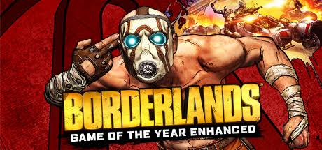
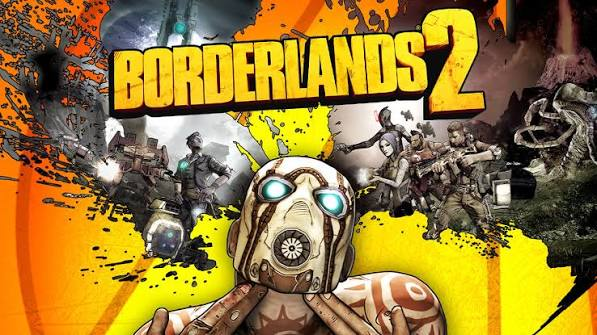
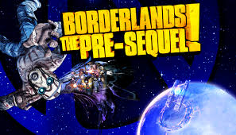
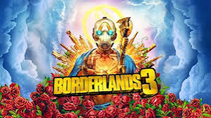
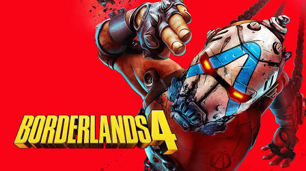

Borderlands 1
In 2009, Gearbox software released their newest game series, Borderlands. Set in a Mad Max inspired desert on the planet of padora, you play as a Vault Hunter trying to find the Great Eridian Vault. The main thing that set Borderlands apart from other FPS games is the art style and the gun. The art style forgoes realism and had a cartoony cell-shaded style. The main apsect of Borderlands is the loot. Using a precedural generation algortihm, the game is able to generate Millions of diffrent guns, so you are always on the hunt for a better weapon.

Borderlands 2
Often considered the best in the series due to its expanded gameplay and story. In the story, you have to take control of pandora back from the CEO of the Hyperion corporation, Handsome Jack, and make sure He does not open another Vault (theres a lot of those actually). The game's story is longer, had more fleshed out characters, and nearly everyone from the first game returns to play a part. Another reason why people like it is the ammount of content. 3 diffrent story playthroughs, 10 diffrent DLC storys, 8 Raid Bosses, and even more means some people play this game for thousands of hours.

Borderlands: The Pre-Sequal
The prequal to Borderlands 2, it chronicals Handome jacks rise to CEO and why he wants to take over Pandora. This game was made in the same engine as BL2, so they are practially the same. The enviroments are a High-Point for most, taking place on the Moon, Elpis and Hyperions Space Station. However, many people dislike the story, as it retcons some events from BL2, and its the shortest out of all the games. This is also the point where the wrting started to go down hill, but some people still prefer the pre-sequal over BL2

Borderlands 3
ahhhhh. No no no no no. This one is almost terrible. why are the main villians streamers. everyone in this game is very annoying. Defintialy the worst wrting in the series. The only good things are the gameplay, having one of the widest varietys of guns to loot. Also the post laucnh DLC is some of the best in the series, but the main story is so terrible, why

Borderlands 4
The most recent game, and a step up from BL3. The story is actually good, dealing with an Evil Dicator know as the Timekeeper taking direct control over the inhabitents of a new planet, Kairos. Your goal is to defeat him and end his evil rule, so we have gone a bit off the rails from treasure hunting. This game is very fun to play and has a lot of content to enjoy. The main crituqie is the open world. The open world is very empty. No reason for it since most of the missions take place in a sectioned off area anyways. Also you need a NASA grade computor to actually run the game at max settings. very Unoptimized/
